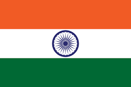
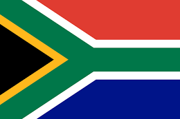
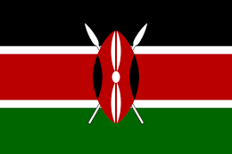
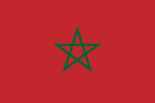
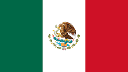

| EUROPA | ASIA | OFRICA | OCEANIA | AMERICA |
|---|---|---|---|---|
| ALEMANIA | JAPON | SUDAFRICA | AUSTRALIA | MEXICO |
| FRANCIA | INDIA | NIGERIA | NUEVA ZELANDA | COLOMBIA |
| ESPAÑA | CHINA | KENIA | FIYI | PERU |
| INGLATERRA | COREA DEL SUR | MARRUECOS | SAMOA | ARGENTINA |
| HOLANDA | INDONESIA | GHANA | PALAOS | BRASIL |
Alemania es un país de Europa occidental con un paisaje de bosques, ríos, cadenas montañosas y playas en el mar del Norte. Tiene más de 2 milenios de historia.
 ALEMANIA
ALEMANIA
Francia, en Europa Occidental, abarca ciudades medievales, villas alpinas y playas mediterráneas.
 FRANCIA
FRANCIA
España, país de la península ibérica de Europa, incluye 17 regiones autónomas con diversas características geográficas y culturales.
 ESPAÑA
ESPAÑA
Inglaterra, la cuna de Shakespeare y The Beatles, es un país de las Islas Británicas que limita con Escocia y Gales.
 INGLATERRA
INGLATERRA
Los Países Bajos son un país del noroeste europeo conocido por su paisaje plano de canales, campos de tulipanes, molinos y ciclovías
HOLANDAJapón es una nación insular del océano Pacífico con densas ciudades, palacios imperiales, parques nacionales montañosos y miles de santuarios y templos.
 JAPON
JAPON
La India es un vasto país de Asia del Sur con un terreno diverso que abarca desde las cumbres del Himalaya hasta la costa del océano Índico.
 INDIAChina es una nación muy poblada de Asia Oriental cuyos vastos paisajes abarcan praderas, desiertos, montañas, lagos, ríos y más de 14,000 km de costa.
 CHINA
CHINA
La República de Corea, comúnmente Corea del Sur es un Estado soberano de Asia Oriental, ubicado en la parte sur de la península de Corea.
 COREA DEL SUR
COREA DEL SUR
Indonesia, un país del Sudeste Asiático compuesto de miles de islas volcánicas, es hogar de cientos de grupos étnicos que hablan varios idiomas distintos.
 INDONESIA
INDONESIA
Sudáfrica es un país del extremo más meridional del continente africano que se caracteriza por sus numerosos ecosistemas distintos.
 SUDAFRICANigeria, oficialmente República Federal de Nigeria, es un país de África occidental, que limita con Níger al norte, con Chad en el nordeste, con Camerún en el este y con Benín en el oeste.
 NIGERIA
NIGERIA
Kenia es un país de África Oriental con una costa en el océano Índico. Su territorio abarca sabana, terrenos en lagos, el espectacular Gran Valle del Rift y zonas montañosas altas
 KENIAMarruecos es un país de África del Norte que limita con el océano Atlántico y el mar Mediterráneo, y se distingue por las influencias culturales bereberes, árabes y europeas.
Ghana es un país del golfo de Guinea en África Occidental, famoso por su diversa fauna, sus fuertes antiguos y las playas aisladas, como las de Busua.
GHANAAustralia es un país rodeado por los océanos Índico y Pacífico. Sus ciudades principales (Sídney, Brisbane, Melbourne, Perth y Adelaida) son costeras.
 AUSTRALIA
AUSTRALIA
Nueva Zelanda es un país en el suroeste del océano Pacífico, que comprende dos islas principales, ambas marcadas por los volcanes y la glaciación.
 NUEVA ZELANDA
NUEVA ZELANDA
Fiyi, un país del Pacífico Sur, es un archipiélago de más de 300 islas. Es famoso por sus paisajes escabrosos, las playas bordeadas de palmeras y los arrecifes de coral con lagunas de aguas cristalinas.
 FIYI
FIYI
Samoa es un país que abarca el grupo más occidental del archipiélago de Samoa, en la Polinesia.
 SAMAO
SAMAO
Palaos es un archipiélago de más de 500 islas, forma parte de la región de Micronesia en el océano Pacífico occidental.
 PALAOS
PALAOS
México es un país entre los Estados Unidos y América Central, conocido por las playas en el Pacífico y el golfo de México, y su diverso paisaje de montañas, desiertos y selvas. Las ruinas antiguas, como Teotihuacán y la ciudad maya de Chichén Itzá
 MEXICOColombia es un país del extremo norte de Sudamérica. Su paisaje cuenta con bosques tropicales, las montañas de los Andes y varias plantaciones de café.
 COLOMBIA
COLOMBIA
Perú es un país de Sudamérica que abarca una sección del bosque del Amazonas y Machu Picchu.
 PERU
PERU
Argentina es un país sudamericano de gran envergadura con un terreno que incluye las montañas de los Andes, lagos glaciales y praderas en las Pampas
 ARGENTINA.
ARGENTINA.
Brasil es un vasto país de Sudamérica que se extiende desde la Cuenca del Amazonas en el norte hasta los viñedos y las enormes cataratas del Iguazú en el sur. Río de Janeiro, simbolizado por su estatua de 38 m del Cristo Redentor
 BRASIL
BRASIL